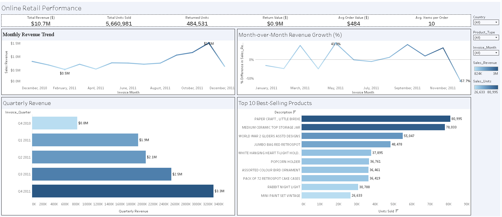
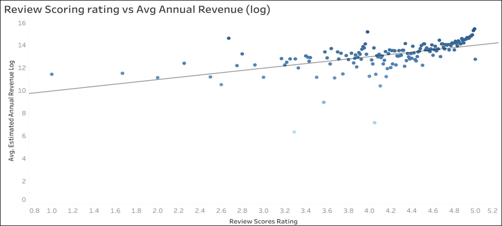
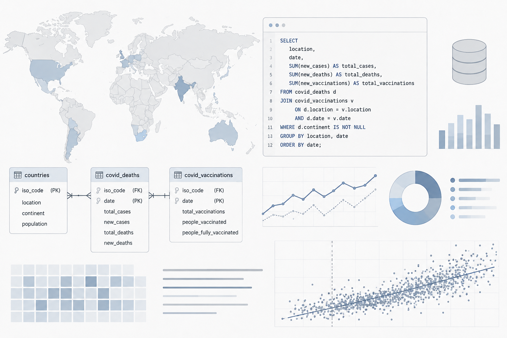
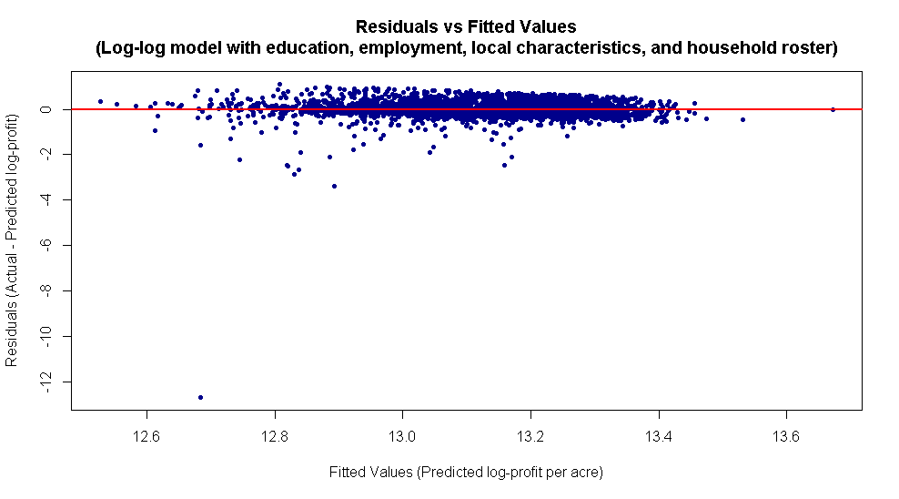
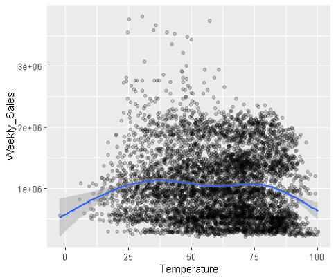
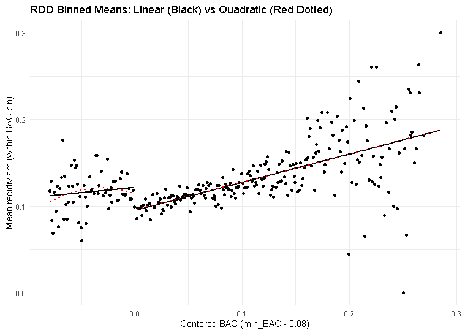
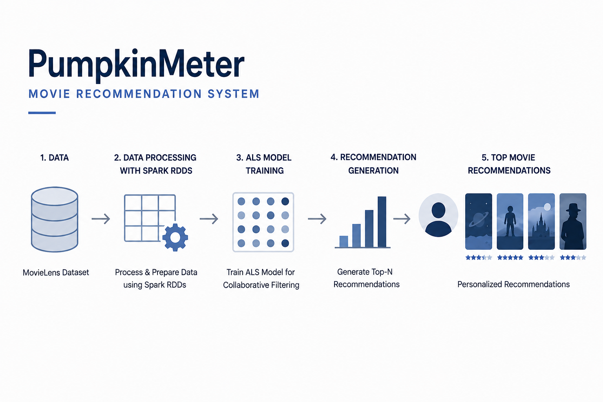

TABLEAU • BUSINESS INTELLIGENCE
Online Retail Performance Dashboard
Tableau • KPI Analysis • Data Visualization • Retail Analytics
View Project → Live Dashboard ↗I'm a Business Analytics graduate student at Seattle University with a background in Environmental Engineering.
My journey began in environmental consulting, where working with complex datasets, geospatial visualization sparked my interest in uncovering insights hidden within data. That curiosity inspired me to pursue a Master's in Business Analytics and expand my expertise in SQL, Python, R, Tableau, machine learning, and data visualization.
For me, analytics is about more than numbers, it's about asking better questions and transforming complex data into insights that support smarter decisions and meaningful impact.
Arcadis India • UK Region
Machine Learning (Logistic Regression • Decision Trees • SVM • KNN • Neural Networks)
Statistical Analysis (Regression Analysis • Hypothesis Testing • Correlation Analysis)

Tableau • KPI Analysis • Data Visualization • Retail Analytics
View Project → Live Dashboard ↗
Python • JMP • Tableau • EDA • Regression Analysis
View Project →
MySQL • Data Exploration • Joins • CTEs • Window Functions
View Project →
R • Regression Analysis • Data Exploration • Business Insights
View Project →
R • Regression Analysis • Fixed Effects • Business Insights
View Project →
R • Regression Discontinuity • Causal Analysis • Policy Evaluation
View Project →
Apache Spark • ALS • Collaborative Filtering • Recommendation Analytics
View Project →